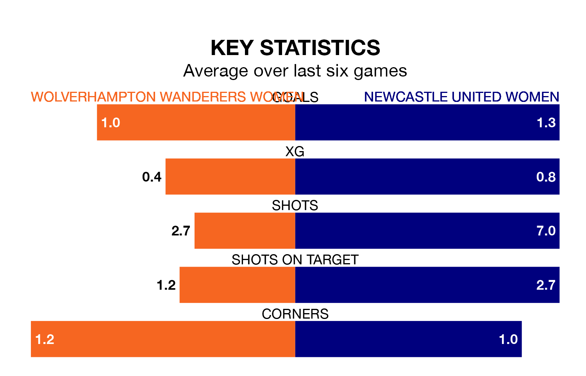

The Women's National League Premier Division North's two meanest defences go head-to-head on Sunday, when Newcastle United Women visit Wolverhampton Wanderers Women.
No teams have conceded fewer goals than Newcastle United to date: the away side have let in just five goals in 17 games.
Wolverhampton Wanderers have conceded seven goals in 12 games, giving them the second tightest back line so far this season.
Newcastle United are top of the table after 17 games, of which they have won 12 and drawn five, earning 41 points.
Wolverhampton Wanderers are five places behind the away side in sixth, with six wins and four draws putting them on 22 points.
The hosts are in mixed form in the Women's National League Premier Division North, with two wins and three draws from their last six games.
With three wins and three draws over that period, Newcastle United's form is better – they have taken 12 points from 18, compared to Wolverhampton Wanderers' nine.
Over the last two years, Wolverhampton Wanderers and Newcastle United have played each other twice. Wolverhampton Wanderers won one of them and they drew the other.
Their last meeting was on February 4, when they played out a 0-0 draw.
Wolverhampton Wanderers' last match was on March 3, a 3-0 win against Liverpool Feds.
Newcastle United drew 0-0 with Stourbridge Women last time out, on March 10.
Updated: 15:10 (UTC), 15/03/24